1
Alle Kinder können lernen
Die Grundannahme ist radikal inklusiv: Lernfähigkeit wird nicht als Privileg der Starken verstanden. Unterricht muss so gestaltet werden, dass auch Lernende mit ungünstigen Startbedingungen Zugang zum Inhalt finden.
Unterrichtsarchitektur
Das evidenzbasierte Fundament moderner, agiler Pädagogik
Direkte Instruktion ist kein nostalgischer Rückgriff auf autoritären Frontalunterricht. Sie ist eine präzise Unterrichtsarchitektur, die Lernziele offenlegt, kognitive Belastung steuert, Verständnis fortlaufend überprüft und Übung so sequenziert, dass möglichst alle Schülerinnen und Schüler erfolgreich lernen können.
Die zugrunde liegende Präsentation deutet Direkte Instruktion als Fundament moderner Lernumgebungen. Agile, kooperative und forschende Formate werden dadurch nicht verdrängt. Sie werden vorbereitet, weil offene Lernformen erst dann produktiv werden, wenn die nötigen fachlichen und kognitiven Werkzeuge verfügbar sind.
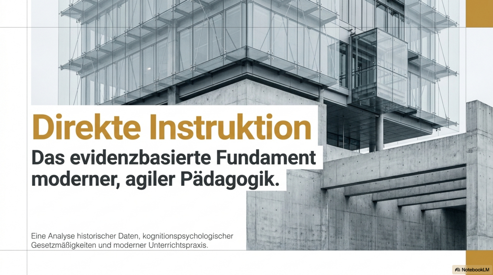
1. Grundidee
Die Direkte Instruktion geht von einer schlichten, aber weitreichenden Annahme aus: Wenn ein Schüler oder eine Schülerin einen Inhalt nicht lernt, wird die Ursache zunächst nicht in mangelnder Begabung, Herkunft oder Motivation gesucht, sondern in der Sequenzierung der Instruktion. Unterricht trägt damit eine hohe Verantwortung. Er muss Lernwege so aufbauen, dass Fehlerquellen minimiert, Zwischenschritte sichtbar und Erfolgserlebnisse systematisch ermöglicht werden.
Historisch entsteht dieses Paradigma in den 1960er Jahren im Umfeld von Siegfried Engelmann und dem Projekt DISTAR. Der Ansatz richtet sich ausdrücklich an unterprivilegierte Risikoschülerinnen und Risikoschüler. Das Ziel ist nicht die Optimierung eines ohnehin privilegierten Lernmilieus, sondern der Versuch, den Zusammenhang von Armut, Bildungsscheitern und geringer Selbstwirksamkeit durch präzisen Unterricht zu durchbrechen.
Der Begriff „fehlerfreie Kommunikation" meint nicht, dass Lernende keine Fehler machen dürfen. Gemeint ist vielmehr, dass die Instruktion selbst möglichst wenig Mehrdeutigkeit produziert. Lernende sollen nicht raten müssen, was gemeint ist, worauf es ankommt oder wann eine Lösung als hinreichend gilt. Gute Direkte Instruktion reduziert Nebel und erhöht diagnostische Klarheit.
2. Fünf Säulen
Die Präsentation verdichtet Direkte Instruktion in fünf Säulen. Sie sind bewusst normativ formuliert, weil sie eine klare Gegenposition zu defizitorientierten Erklärungen von Bildungsungleichheit bilden.
Die Grundannahme ist radikal inklusiv: Lernfähigkeit wird nicht als Privileg der Starken verstanden. Unterricht muss so gestaltet werden, dass auch Lernende mit ungünstigen Startbedingungen Zugang zum Inhalt finden.
Nicht ein abstraktes Selbstwerttraining führt zuerst zum Lernen, sondern erlebter fachlicher Erfolg stabilisiert Selbstwirksamkeit. Wer merkt, dass Lernen gelingt, entwickelt Vertrauen in die eigene Kompetenz.
Erfolgreicher Unterricht entsteht nicht durch spontane Genialität der Lehrkraft. Er verlangt systematische Materialien, klare Routinen und professionelle Entlastung.
Benachteiligte Lernende dürfen nicht nur langsam begleitet werden. Sie brauchen oft ein höheres Lerntempo, damit Rückstände nicht dauerhaft festgeschrieben werden.
Kleine Unschärfen in Aufgaben, Begriffen oder Beispielen summieren sich zu großen Lernproblemen. Präzision ist daher keine Kleinlichkeit, sondern eine Frage der Gerechtigkeit.
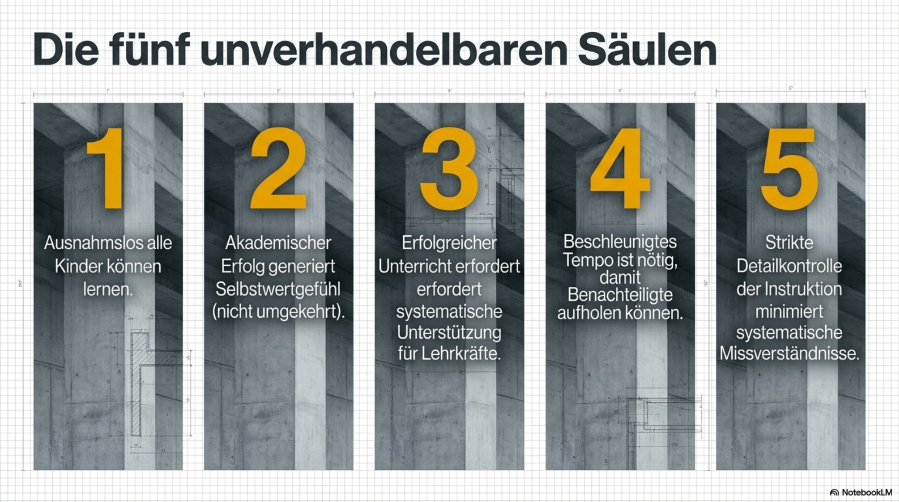
3. Big DI
Die Präsentation unterscheidet nicht nur einzelne Unterrichtstechniken, sondern beschreibt eine umfassende Mechanik des Kompetenzerwerbs. Zentral ist das Prinzip des Mastery Learning: Der Übergang zum nächsten kumulativen Lernschritt erfolgt erst dann, wenn der vorherige Schritt tatsächlich beherrscht wird.
Diese Logik widerspricht einem Unterricht, der nach Stoffverteilungsplan voranschreitet, unabhängig davon, ob die Klasse verstanden hat. Direkte Instruktion ersetzt die Frage „Habe ich es erklärt?" durch die Frage „Ist es gelernt worden?" Das verschiebt die Aufmerksamkeit vom Lehrvortrag zum nachweisbaren Kompetenzaufbau.
Geskriptete Unterrichtsmaterialien werden dabei nicht als Entmündigung der Lehrkraft verstanden. Sie entlasten von spontaner Planung, damit die Aufmerksamkeit auf Beobachtung, Rückmeldung und Interaktion gerichtet werden kann. Wenn Materialien empirisch pilotiert sind und früh typische Fehler erfassen, gewinnt die Lehrkraft Zeit für genau die pädagogische Arbeit, die nicht automatisierbar ist.
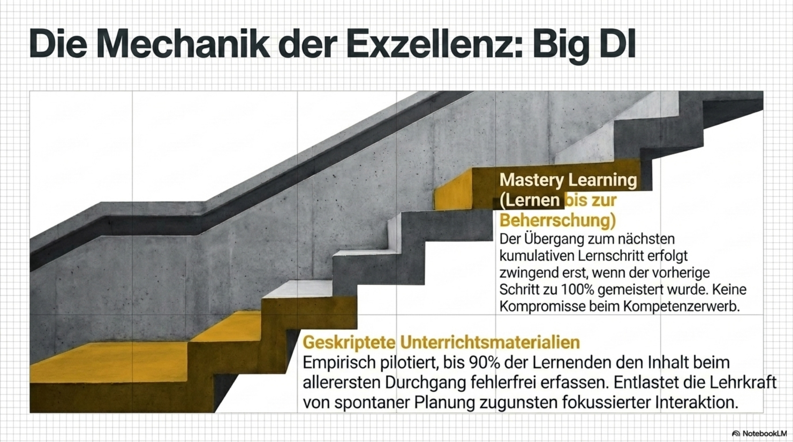
4. Empirische Zäsur
Die Präsentation deutet Project Follow Through als empirische Zäsur. Das Programm lief von 1967 bis 1995, war eines der größten bildungspolitischen Experimente überhaupt und verglich 21 Bildungsmodelle mit etwa 75.000 At-Risk-Kindern pro Jahr. Die zentrale Frage lautete, welche pädagogischen Modelle den Teufelskreis aus Armut und Bildungsversagen messbar durchbrechen können.
Die Ergebnisse galten als Schock für den pädagogischen Zeitgeist. Direkte Instruktion erreichte in den Bereichen Basic Skills, Cognitive Skills und Affective Skills jeweils Spitzenpositionen. Besonders irritierend war, dass auch Selbstwertgefühl und Kontrollüberzeugung nicht bei den offenen, affektorientierten Modellen am stärksten ausfielen, sondern bei dem Modell, das fachlichen Erfolg am verlässlichsten erzeugte.
Die Folien verknüpfen diesen historischen Befund mit John Hatties Visible Learning. In der Aggregation von mehr als 1.400 Metaanalysen wird Direkte Instruktion mit einem Effektmaß von etwa d = 0,56 bis 0,60 angegeben. Problemorientiertes Lernen und entdeckendes Lernen bleiben deutlich darunter, vor allem wenn sie zu früh und ohne ausreichende Wissensbasis eingesetzt werden.
Der didaktische Kern dieser Befunde ist nicht, dass offene Lernformen wertlos wären. Der Kern ist, dass sie Voraussetzungen haben. Wer Problemlösen, Forschung und Transfer will, muss zuerst die fachlichen Schemata aufbauen, mit denen Schülerinnen und Schüler überhaupt sinnvoll Probleme lösen können.
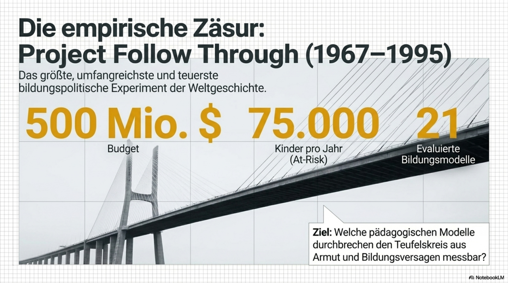
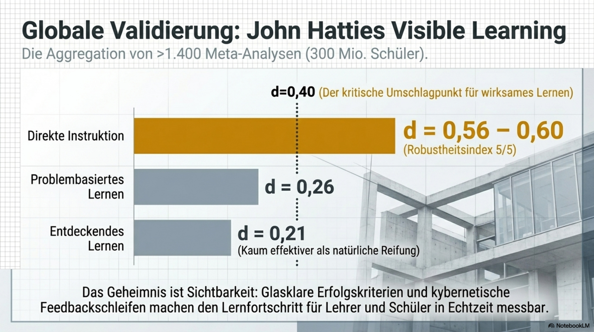
5. Cognitive Load Theory
Die Cognitive Load Theory liefert die kognitionspsychologische Begründung dafür, warum Direkte Instruktion gerade in frühen Lernphasen so wirksam ist. Das Arbeitsgedächtnis ist extrem limitiert. Es kann nur wenige neue Informationselemente gleichzeitig aktiv halten. Wird diese Kapazität überschritten, entsteht kognitive Überlastung.
Offenes oder entdeckendes Lernen führt bei Novizen häufig genau in diese Überlastung. Die Lernenden müssen gleichzeitig den Inhalt verstehen, den Lösungsweg planen, relevante von irrelevanten Informationen trennen und den eigenen Lernprozess steuern. Für Fortgeschrittene kann das produktiv sein, weil viele fachliche Schemata bereits automatisiert sind. Für Anfängerinnen und Anfänger ist es oft eine Zumutung.
Direkte Instruktion fungiert in dieser frühen Phase als externes Arbeitsgedächtnis. Sie präsentiert Inhalte kleinschrittig, ordnet sie, reduziert Suchbewegungen und verhindert, dass die Aufmerksamkeit im methodischen Nebel verloren geht. Das Langzeitgedächtnis wird so Schritt für Schritt mit automatisierten kognitiven Schemata ausgestattet. Erst diese Schemata machen spätere Autonomie möglich.
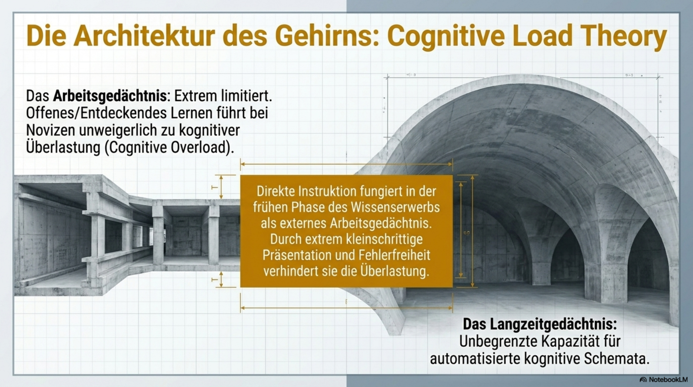
6. Abgrenzung
Ein zentrales Missverständnis besteht darin, Direkte Instruktion mit langem Lehrervortrag gleichzusetzen. Die Präsentation trennt diese beiden Formen ausdrücklich. Klassischer Frontalunterricht ist häufig lehrerzentriert, stoffplanorientiert und passiv. Direkte Instruktion ist dagegen lernendenzentriert, weil sie sich am messbaren Verständnis orientiert.
| Kriterium | Direkte Instruktion | Klassischer Frontalunterricht |
|---|---|---|
| Steuerung | Lehrgesteuert, aber konsequent lernendenzentriert. Das Tempo richtet sich nach Verständnis, nicht nach dem Stoffplan. | Lehrzentriert. Das Tempo wird oft durch Stofffülle und Unterrichtsplanung diktiert. |
| Binnendifferenzierung | Explizit und dynamisch. Kleingruppen und gezieltes Üben entstehen aus fortlaufender Diagnose. | Oft wird die Klasse als homogene Masse behandelt; Unterschiede bleiben verdeckt. |
| Feedback-Kultur | Rückmeldung in Echtzeit. Aufgabe, Prozess, Regulation und Selbstbild werden während des Lernens adressiert. | Feedback erfolgt häufig global oder zeitlich verzögert, etwa nach Tests oder Hausaufgaben. |
| Kognitive Aktivierung | Sehr hoch. Choral Responding, Checks for Understanding und angeleitetes Üben binden alle ein. | Oft gering, weil längeres Zuhören passives Verhalten begünstigt. |
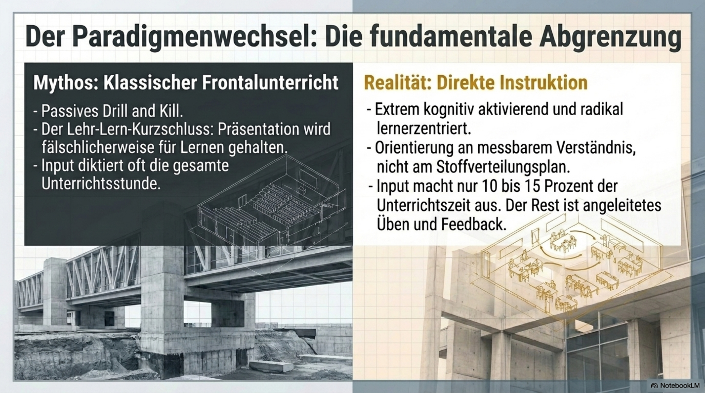
7. Unterrichtsarchitektur
Die Präsentation beschreibt Direkte Instruktion als Abfolge von sieben Phasen. Diese Phasen sind keine starre Choreografie, sondern eine kognitive Bauordnung: Zielklarheit, Erfolgskriterien, Aktivierung, Modellierung, geführtes Üben, Konsolidierung und Transfer.
Die Ziele werden unmissverständlich offengelegt. Schülerinnen und Schüler wissen, was sie am Ende können sollen und woran der Erfolg erkennbar wird.
Erfolgskriterien verhindern Rätselraten. Sie übersetzen das Lernziel in beobachtbare Merkmale einer guten Leistung.
Commitment und Hook richten Aufmerksamkeit aus. Die Lernenden verstehen, warum die Aufgabe relevant ist.
Die Lehrkraft modelliert den Denkweg. Sie zeigt nicht nur Ergebnisse, sondern macht kognitive Zwischenschritte sichtbar.
Die We-do-Phase ist das dynamische Herzstück. Ständiges Scaffolding und Korrektur verhindern die Verfestigung falscher Muster.
Der neue Inhalt wird konsolidiert und in ein kognitives Netz eingebunden.
Die You-do-Phase dient Transfer und Automatisierung. Sie beginnt erst, wenn die Voraussetzungen gesichert sind.
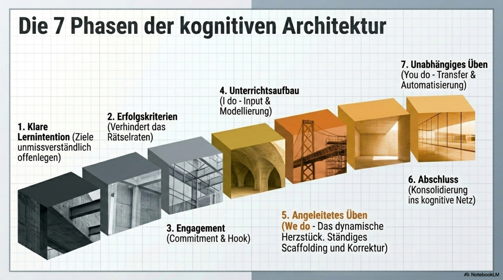
8. Synergie mit Kooperation
Direkte Instruktion und kooperatives Lernen sind keine Antagonisten. Der Gegensatz entsteht nur, wenn man Direkte Instruktion fälschlich als Dauerinput versteht oder kooperatives Lernen fälschlich als ungesteuerte Gruppenarbeit. In einer modernen Unterrichtsarchitektur haben beide ihren Ort.
Think-Pair-Share eignet sich besonders zur Vorwissensaktivierung. Die kurze Einzeldenkphase verhindert, dass nur die schnellsten Schülerinnen und Schüler den Prozess dominieren. Die Partnerphase erzeugt sprachliche Durcharbeitung, bevor Beiträge in die Klasse gehen.
Reciprocal Teaching ist wirksam, weil Lernende Lösungswege laut verbalisieren. Dadurch wird illusorisches Verständnis schnell sichtbar. Wer glaubt, etwas verstanden zu haben, merkt beim Erklären oft, welche Lücke noch besteht.
Fading und Coaching beschreiben den Übergang in Autonomie. Während der We-do-Phase zirkuliert die Lehrkraft als Coach. Sie zieht Unterstützung nicht abrupt zurück, sondern reduziert sie, sobald die Lernenden tragfähige Routinen zeigen.
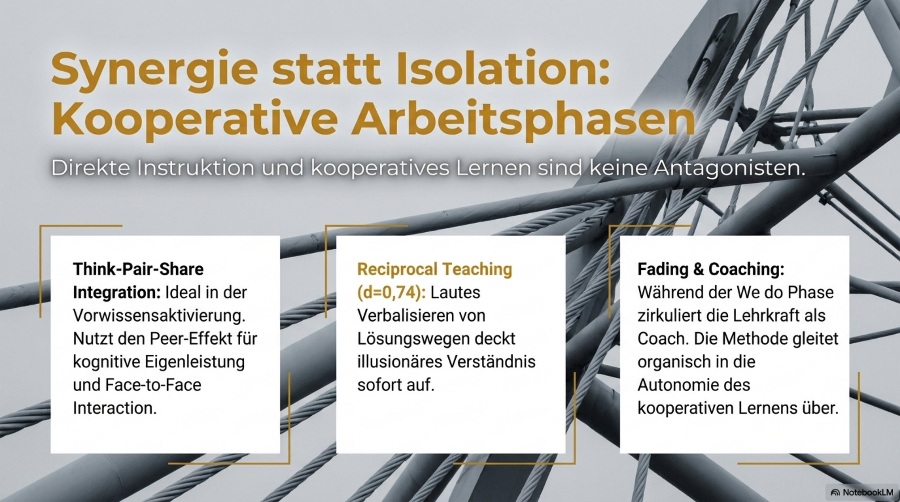
9. Domänenspezifische Unerlässlichkeit
Direkte Instruktion ist nicht in jeder Situation gleich wichtig. Besonders unverzichtbar wird sie in hierarchischen Fächern wie Mathematik, Schriftspracherwerb und vielen Bereichen der Naturwissenschaften. Dort bauen Konzepte kumulativ aufeinander auf. Wer eine Basisoperation nicht beherrscht, scheitert später an komplexeren Problemen, obwohl die eigentliche Schwierigkeit viel früher entstanden ist.
Auch frühe Phasen des Wissenserwerbs verlangen explizite Führung. Bevor Novizen komplexe Probleme lösen können, müssen sie die kognitiven Werkzeuge automatisieren. Andernfalls wird Problemlösen zur bloßen Suchbewegung.
Schließlich ist Direkte Instruktion eine Frage der Chancengleichheit. Offene Lernformen setzen häufig elitäres Vorwissen und ausgeprägte Metakognition voraus. Direkte Instruktion kann At-Risk-Schülerinnen und -Schüler durch Pre-Teaching auffangen, bevor Frustration entsteht.
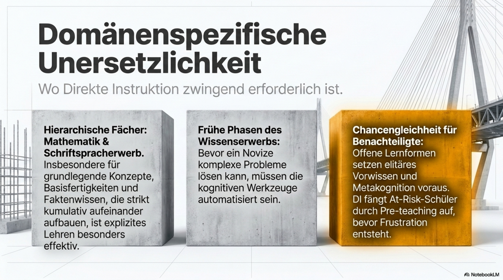
10. Fazit
Die Präsentation endet mit einer pointierten These: Forschendes Lernen ist das ultimative Ziel. Direkte Instruktion ist der Weg dorthin. Diese Formulierung ist didaktisch wichtig, weil sie den falschen Gegensatz zwischen Instruktion und Offenheit auflöst.
Direkte Instruktion ist das konstruktive Alignment der frühen Lernphase. Sie zwingt zur analytischen Durchdringung des Fachs: Was genau sollen Schülerinnen und Schüler können? Welche Teilschritte sind nötig? Woran erkenne ich Erfolg? Wo entstehen typische Fehlkonzepte? Erst wenn diese Fragen beantwortet sind, kann offene Arbeit mehr sein als eine ästhetisch ansprechende Überforderung.
Im offenen Unterricht bleibt die Lehrkraft zudem nicht passiv. Sie wird zum Dirigenten einer anspruchsvollen Lernumgebung: Sie setzt kurze, hochkonzentrierte Instruktionsphasen, wenn Gruppen an Grenzen stoßen, sie diagnostiziert Fehlkonzepte und sie schließt Kompetenzlücken gezielt. Ohne ein felsenfestes Fundament kollabiert jede offene Lernumgebung.
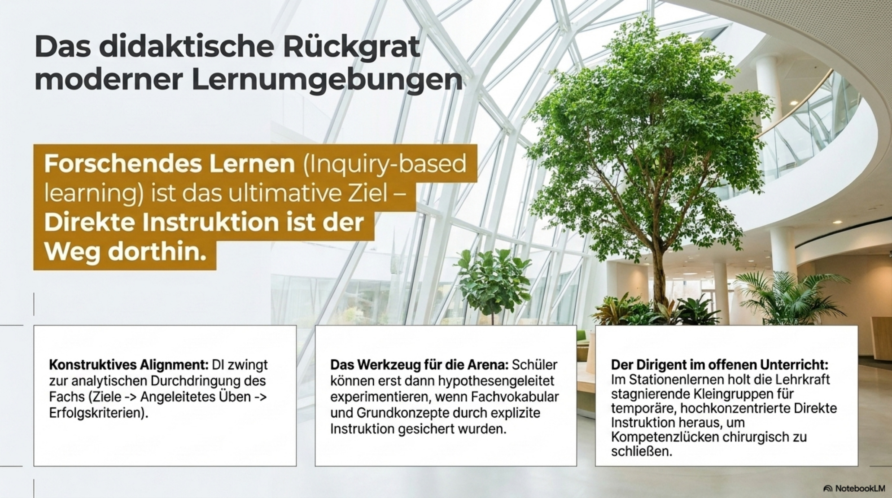
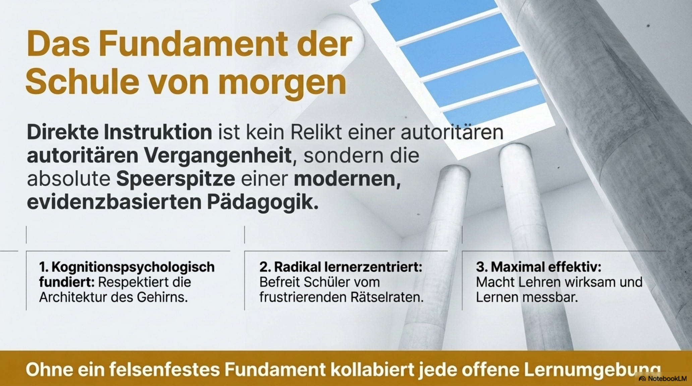
11. Unterrichtsplanung mit KI
Dieser Prompt ist für Claude (Anthropic) optimiert und kann direkt in claude.ai eingefügt werden. Er initiiert einen strukturierten Dialog, in dem Fach, Thema und Jahrgangsstufe erfragt werden. Am Ende erzeugt Claude vollständigen LaTeX-Code für ein druckfertiges Unterrichtsdokument mit Lehrerhinweisen, Tafelbildern und nach Phasen gegliederten Schülerarbeitsblättern.
Prompt vollständig kopieren und in Claude einfügen
Claude fragt nach Fach, Thema und Jahrgangsstufe
Kurze didaktische Diskussion und Feinabstimmung
Claude liefert vollständigen, kompilierbaren LaTeX-Code
PDF mit pdflatex erzeugen, Schülerblätter separat drucken
# MASTERPROMPT: Unterrichtsplanung – Direkte Instruktion → LaTeX-Dokument # Optimiert für Claude (Anthropic). Einfach vollständig einfügen und absenden. Du bist ein erfahrener Fachdidaktiker mit tiefer Kenntnis der Direkten Instruktion (nach Engelmann, Rosenshine und der Cognitive Load Theory). Deine Aufgabe ist es, mich durch die Planung einer konkreten Unterrichtseinheit zu führen und am Ende einen vollständigen, kompilierbaren LaTeX-Code zu liefern. ═══ PHASE 1: Klärung des Kontexts ═══ Stelle mir nacheinander (nicht alle auf einmal) folgende Fragen und warte jeweils auf meine Antwort, bevor du weitergehst: 1. In welchem Fach soll die Unterrichtseinheit stattfinden? (z. B. Physik, Chemie, Mathematik, Biologie, Deutsch, Geschichte …) 2. Welches Thema oder welchen Kompetenzbereich willst du behandeln? (So konkret wie möglich, z. B. „Induktionsgesetz – Lenzsche Regel" oder „Schriftliches Multiplizieren zweistelliger Zahlen") 3. Für welche Jahrgangsstufe und welchen Kurstyp planst du? (z. B. Klasse 9 Realschule, Q1 Leistungskurs, EF Grundkurs) 4. Wie viele Unterrichtsstunden soll die Einheit umfassen, und wie lang ist eine Stunde? (z. B. 2 × 45 min oder 1 × 90 min) 5. Gibt es besondere Rahmenbedingungen, die ich berücksichtigen soll? (z. B. kein Experiment möglich, Lerngruppe mit hohem Förderbedarf, bereits bekannte Vorkenntnisse, Klausur danach, …) → Falls keine, antworte einfach „keine". ═══ PHASE 2: Didaktische Diskussion ═══ Nachdem ich alle fünf Fragen beantwortet habe, entwickelst du gemeinsam mit mir einen kurzen didaktischen Kommentar (ca. 8–12 Sätze), der folgendes klärt: a) Welche Vorwissensanker und kognitiven Schemata müssen aktiviert werden? b) Wo liegen die typischen Fehlkonzepte und Stolperstellen? c) Wie wird die 7-Phasen-Architektur der Direkten Instruktion (Lernintention → Erfolgskriterien → Hook → Modellierung → We-do → Konsolidierung → You-do) auf dieses Thema angewendet? d) Welche Differenzierungsmaßnahmen sind sinnvoll? Schließe die Diskussion mit einer kurzen Rückfrage ab: „Möchtest du etwas an diesem Aufbau ändern, bevor ich den LaTeX-Code erzeuge?" Warte auf mein „okay" oder meine Korrekturen. ═══ PHASE 3: LaTeX-Ausgabe ═══ Erzeuge nach meiner Bestätigung einen vollständigen, fehlerfreien LaTeX-Code mit pdflatex kompilierbar (kein XeLaTeX, kein LuaLaTeX erforderlich). Paketliste (zwingend): \usepackage[T1]{fontenc} \usepackage[utf8]{inputenc} \usepackage[ngerman]{babel} \usepackage{helvet} % Serifenlose Grundschrift \renewcommand{\familydefault}{\sfdefault} \usepackage{geometry} % Seitenränder \usepackage{tcolorbox} % farbige Boxen \usepackage{array, booktabs} % Tabellen \usepackage{enumitem} % Listen \usepackage{fancyhdr} % Kopf- und Fußzeile \usepackage{graphicx} % Grafiken (optional) \usepackage{amssymb, amsmath}% Mathematik \usepackage{siunitx} % SI-Einheiten \usepackage{tikz} % Tafelbilder als TikZ-Diagramme \usepackage[hidelinks]{hyperref} Dokumentstruktur: Das LaTeX-Dokument enthält zwei logische Teile, die beide in einer einzigen .tex-Datei stehen, aber so aufgebaut sind, dass jeder Teil separat gedruckt werden kann: ━━ TEIL A: Lehrerhandreichung ━━ • Deckblatt mit Fach, Thema, Jahrgangsstufe, Datum (Platzhalter) • Lernziele (als tcolorbox, blau) • Erfolgskriterien (als Checkliste) • Tabellarische Phasenübersicht der 7 Phasen mit Zeitangaben, Lehreraktion, Schüleraktion und Sozialform • Hinweise zu typischen Fehlkonzepten (als tcolorbox, orange/gelb) • Differenzierungshinweise • Mindestens ein ausgearbeitetes TikZ-Tafelbild (sauber beschriftet, thematisch passend, mit Kommentaren im Code) • Literatur-/Quellenhinweise (optional, als Fußnote oder Anhang) ━━ TEIL B: Schülerunterlagen ━━ Dieser Teil beginnt mit \newpage und einem klaren Trennkommentar im LaTeX-Code: %% ========================================================= %% SCHÜLERUNTERLAGEN – ab hier separat druckbar (ab Seite X) %% ========================================================= Der Teil enthält: B1 – Instruktionsbegleiter (We-do) Strukturiertes Arbeitsblatt, das Schülerinnen und Schüler während der gelenkten Erarbeitungsphase ausfüllen: Lückentext, Skizzen zum Beschriften, geleitete Beweisschritte oder Rechenwege mit Platzhaltern. → Kopfzeile mit Name, Klasse, Datum → Feld für Lernziel (von Schüler selbst einzutragen) B2 – Übungsaufgaben (You-do) Mindestens 6 gestufte Aufgaben: – 2 Basisaufgaben (direkte Anwendung des Gelernten) – 2 Transferaufgaben (leicht variierter Kontext) – 2 Vertiefungsaufgaben (anspruchsvoll, offen, kreativ) Jede Aufgabe mit Punktzahl und Platz für den Lösungsweg. Passende Formeln/Hilfsmittel als kleine Infobox am Rand. B3 – Selbstevaluationsbogen Kurze Tabelle: Ich kann … / noch nicht / mit Hilfe / sicher (5–7 Zeilen, passend zu den Erfolgskriterien aus Teil A) Formatierungsregeln: • Seitenränder: top=2cm, bottom=2cm, left=2.5cm, right=2cm • Kopfzeile (fancyhdr): Fach | Thema | Jahrgangsstufe • Fußzeile: Seitenzahl zentriert • Schriftgröße: 11pt Grundtext, 9pt in Tabellen • Vektoren und physikalische Größen korrekt gesetzt: \vec{F}, \vec{B}, \vec{v} usw. • SI-Einheiten konsequent mit siunitx: \SI{9{,}81}{\meter\per\second\squared} • Keine doppelten Gleichheitszeichen pro Zeile • Verbzusammensetzungen mit Bindestrich: Coulomb-Kraft, Lorentz-Kraft • Deutsch: korrekte Umlaute (ä, ö, ü, ß), keine Ersatzschreibweisen Ausgabe: Gib den vollständigen LaTeX-Code als einzigen Codeblock aus (```latex … ```), sodass er direkt in eine .tex-Datei kopiert und mit pdflatex kompiliert werden kann. Füge am Anfang des Codes einen Kommentarblock ein: %% Erzeugt mit Claude (Anthropic) · Masterprompt Direkte Instruktion %% Fach: [FACH] | Thema: [THEMA] | Stufe: [STUFE] %% Kompilieren: pdflatex dateiname.tex (2×) %% Schülerunterlagen (Teil B) beginnen auf Seite [X] – ab dort separat drucken ═══ STARTE JETZT ═══ Beginne mit Frage 1 aus Phase 1.
Claude liefert einen vollständigen LaTeX-Quellcode (ein einziger Codeblock, direkt kopierbar). Die Datei enthält Teil A (Lehrerhandreichung) mit Phasenplan, Tafelbild als TikZ-Grafik und Hinweisen zu Fehlkonzepten sowie Teil B (Schülerunterlagen), der ab einer definierten Seite separat ausgedruckt werden kann. Kompiliere mit pdflatex dateiname.tex (zweimal für korrekte Seitenzahlen).
Anhang
Die Originalfolien sind als Bildmaterial eingebunden. Ein Klick öffnet die jeweilige Folie vergrößert. So kann die Webseite als eigenständige Vertiefung oder als Begleitseite zu einer Präsentation genutzt werden.
Impressum
Dr. Claus Unterberg
Gymnasium Thomaeum Kempen
Oelstraße 20
47906 Kempen
E-Mail: claus.unterberg@thomaeum.de
Dr. Claus Unterberg, Anschrift wie oben.
Die auf dieser Seite veröffentlichten Texte, Grafiken und Folien sind urheberrechtlich geschützt. Eine Nutzung im schulischen Kontext ist ausdrücklich erwünscht; eine darüber hinausgehende Verwendung bedarf der vorherigen Zustimmung. Drittinhalte sind als solche gekennzeichnet; deren Urheberrechte bleiben unberührt.
Die Inhalte dieser Seite wurden mit Sorgfalt zusammengestellt. Für ihre Richtigkeit, Vollständigkeit und Aktualität kann jedoch keine Gewähr übernommen werden. Bei konkreten Hinweisen auf Rechtsverletzungen werden die entsprechenden Inhalte umgehend entfernt.
Diese Seite enthält Verweise auf externe Websites, deren Inhalte nicht im Einflussbereich der verantwortlichen Person liegen. Für die Inhalte der verlinkten Seiten ist stets deren Betreiber verantwortlich. Eine dauerhafte inhaltliche Kontrolle dieser externen Seiten ist ohne konkrete Anhaltspunkte einer Rechtsverletzung nicht zumutbar.
Datenschutzerklärung
Diese Seite ist bewusst datensparsam aufgebaut. Sie verwendet keine Cookies, kein Tracking, keine externen Schriftdienste, keine externen Content Delivery Networks und keine eingebetteten Inhalte von Drittanbietern. Alle zur Darstellung notwendigen Ressourcen werden vom Server dieser Seite ausgeliefert.
Verantwortlich für die Datenverarbeitung auf dieser Seite ist die im Impressum genannte Person. Kontaktdaten entnimm bitte dem Impressum.
Diese Seite wird über GitHub Pages bereitgestellt. Bei jedem Aufruf werden durch GitHub, Inc. automatisch Zugriffsdaten verarbeitet, insbesondere gekürzte IP-Adresse, Datum und Uhrzeit, aufgerufene Ressource, übertragene Datenmenge sowie verwendeter Browser und Betriebssystem. Die Verarbeitung erfolgt zur Gewährleistung eines reibungslosen Verbindungsaufbaus, zur Sicherheit der Systeme und zur technischen Administration auf Grundlage des berechtigten Interesses gemäß Art. 6 Abs. 1 lit. f DSGVO. Weitere Informationen finden sich in der Datenschutzerklärung von GitHub.
Beim Klick auf externe Links verlässt der Browser diese Seite. Ab diesem Zeitpunkt gelten die Datenschutzbestimmungen des jeweiligen Anbieters. Für die dortige Verarbeitung kann diese Seite keine Verantwortung übernehmen.
Dir stehen nach der Datenschutzgrundverordnung folgende Rechte zu:
Zuständige Aufsichtsbehörde ist die Landesbeauftragte für Datenschutz und Informationsfreiheit Nordrhein-Westfalen, Kavalleriestraße 2 bis 4, 40213 Düsseldorf.